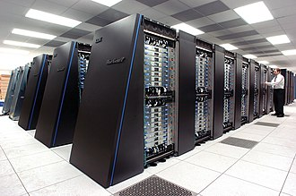

Hello My Name is Bethina Dileep i am a undergratuate student in Karunya University in Coimbator.i currently Studying in B.Tech 3rd Year Computer Science and Engineering. in this we will se what is super computer.
A supercomputer is a computer with a high level of performance as compared to a general-purpose computer. The performance of a supercomputer is commonly measured in floating-point operations per second (FLOPS) instead of million instructions per second (MIPS). Since 2017, there are supercomputers which can perform over 1017 FLOPS (a hundred quadrillion FLOPS, 100 petaFLOPS or 100 PFLOPS).[3] For comparison, a desktop computer has performance in the range of hundreds of gigaFLOPS to tens of teraFLOPS.[4][5]Since November 2017, all of the world's fastest 500 supercomputers run Linux-based operating systems.[6] Additional research is being conducted in the United States, the European Union, Taiwan, Japan, and China to build faster, more powerful and technologically superior exascale supercomputers.[7]
External link - link to http://www.karunya.edu/cse/inde.php
Internal link- Internal link
Email Link: send your feedback
Phone link: 1234567890
clickable Image: 
Web Technology refers to the various tools and techniques that are utilized in the process of communication between different types of devices over the internet. A web browser is used to access web pages. ... Hyperlinked resources on the World Wide Web can be accessed using software interfaces provided by Web browsers.
Web Development: Web development refers to the building, creating, and maintaining of websites. It includes aspects such as web design, web publishing, web programming, and database management. It is the creation of an application that works over the internet i.e. websites. Web Development can be classified into two ways: Frontend Development: The part of a website that the user interacts directly is termed as front end. It is also referred to as the ‘client side’ of the application. Backend Development: Backend is the server side of a website. It is the part of the website that users cannot see and interact. It is the portion of software that does not come in direct contact with the users. It is used to store and arrange data.
Php
Server Side Scripting Language
Java Script
Client Side Scripting Language
Web Development
•HTML,CSS
•JavaScript
■ CSS Types
■ Bootstrap,Materialized CSS,Semantic CSS
A. CSS Library:Pure CSS
B. CSS Preprocessor:SASS,LESS
• Second item
• Third item
Backend Development: Backend is the server side of a website. It is the part of the website that users cannot see and interact. It is the portion of software that does not come in direct contact with the users. It is used to store and arrange data.AJAX: Ajax is an acronym for Asynchronous Javascript and XML. It is used to communicate with the server without refreshing the web page and thus increasing the user experience and better performance.There are many other languages through which one can do front-end development depending upon the framework for example Flutter user Dart, React uses JavaScript and Django uses Python, and much more.
| Java Script | ||
|---|---|---|
| Java Script Technologys | Java Script FrameWorks | Java Script Librarys |
| ES6 | AngularJS | jQuery |
| TypeScript | ReactJS | jQueryMobile |
| Vue.JS | script.aculo.us | |
| P5.JS | ||
| D3.JS | ||
| Underscore.JS | ||